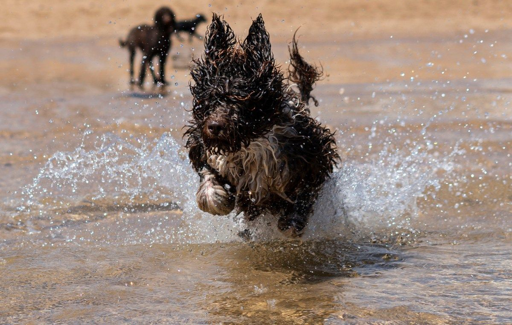
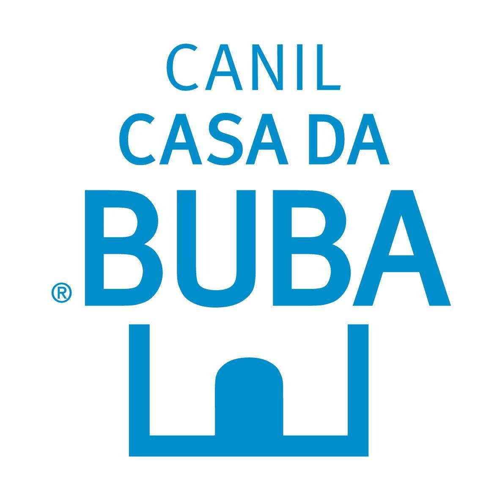
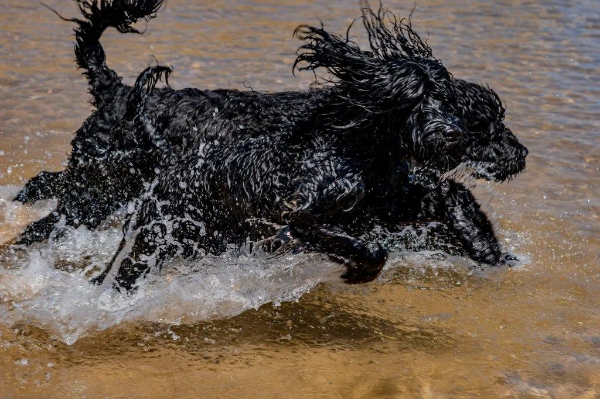

Diário da ninhada · Semana 3
Hoje foi o primeiro banho de mar.
Proposta de identidade visual · v1 · Outubro 2026
Cão de Água Português · Lagos, Algarve
01 · Ponto de partida
O logótipo atual já tinha o mais importante: uma porta, a casa. Guardamos essa ideia e damos-lhe o que lhe faltava: uma pata, a água do Algarve e um desenho que funciona do tamanho de uma medalha de coleira ao de uma fachada.

02 · A ideia
A casa da Buba. A forma que já era da marca, agora em arco, como as portas do Algarve.
Uma pata à porta diz logo que aqui vivem cães. Dedos ovais e uma almofada com três lóbulos, como uma pata a sério.
Uma linha de água na base da porta: a barra azul das casas algarvias e o mar onde estes cães nascem para nadar.
03 · Assinaturas
O nome é escrito em Fraunces suave, com o C e o B em maiúscula: redondo como os caracóis do pelo e simpático sem ser infantil.
 Casa da Buba
Casa da Buba04 · Cor
Não inventámos a paleta: medimo-la nas fotografias da casa. Cal e anil fazem quase todo o trabalho; o resto vem dos próprios cães.
05 · Tipografia
Nascidos para a água. Nutridos com amor.
Serifa com terminais arredondados (eixo SOFT a 100) e um itálico expressivo para sublinhar a emoção. Gratuita, Google Fonts.
Membranas entre os dedos, pelo sem subpelo e três níveis de alerta. Um cão feito para o mar.
Grotesca contemporânea, muito legível em ecrã e em tamanhos pequenos. Gratuita, Google Fonts.
Etiqueta · Instrument Sans 600 · maiúsculas
Título · Fraunces 560
Destaque em itálico · Fraunces 480
Texto corrido · Instrument Sans 400 · 17/26. A Casa da Buba fala como fala uma família: com calor, com memória e sem pressa.
06 · Padrão
O padrão de ondas da calçada portuguesa, redesenhado com a onda do símbolo. Em anil sobre cal é o mar. Em breu sobre cal são os cães pretos e brancos.
07 · Fotografia



08 · Aplicações
Nome Apelido
Criadora · Cão de Água Português+351 ••• ••• •••
ola@casadabuba.pt
Lagos · Algarve
Cédula
do cachorro

Hoje foi o primeiro banho de mar.
09 · Voz
“A Petra foi a primeira a ir à água. Os irmãos seguiram-na.”
“Exemplares de elevada qualidade genética disponíveis para reserva.”
“Venha conhecê-los a Lagos. Traga toalha.”
“Agende já a sua visita às nossas instalações!”